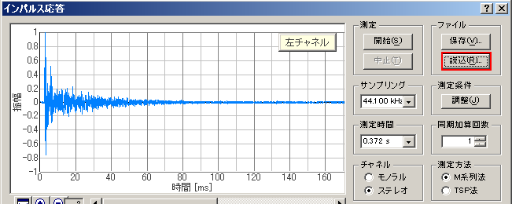
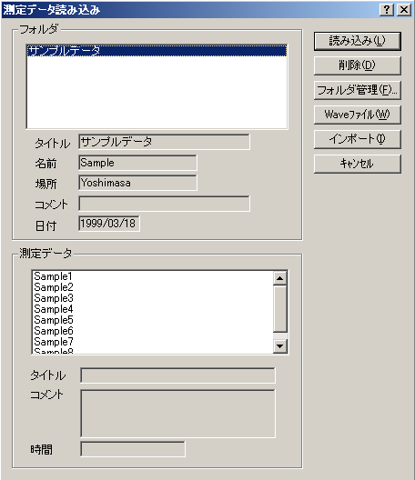

| 項目 | 説明 |
|---|---|
| フォルダ |
測定データの保存してあるフォルダの一覧がリスト表示されます。ここで読み込みたいデータの入ったフォルダを選択してください。 リストボックスの下には、選択したフォルダの情報（タイトル～日付）が表示されます。 |
| 測定データ |
[フォルダ]のリストボックスで選択したフォルダの中のデータが一覧表示されます。ここで読み込みたいデータを選択してください。 リストボックスの下には、選択したデータの情報｛タイトル，コメント，時間｝が表示されます。 |
| ボタン | 説明 |
|---|---|
| 読み込み | [測定データ]のリストボックスで選択したデータの読み込みを実行します。 |
| 削除 | [測定データ]のリストボックスで選択したデータを削除します。 |
| フォルダ管理 | フォルダ管理のダイアログを開きます。 |
| WAVEファイル | WAVEファイルからインパルス応答データを読み込みます。 |
| インポート | データベースをインポートします。他のPC上のDSSF3などから、インパルス応答のデータベースを全部インポートするときに使用します。 |
| キャンセル | 何もせずにこのダイアログを閉じます。 |